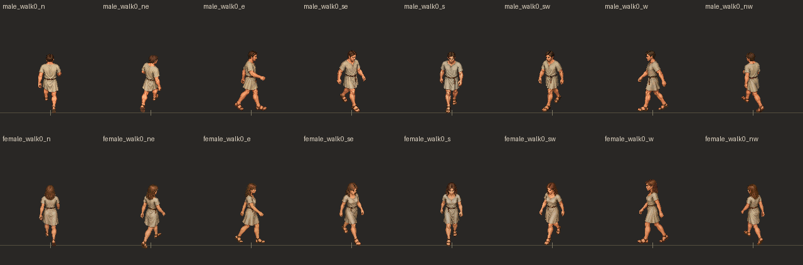
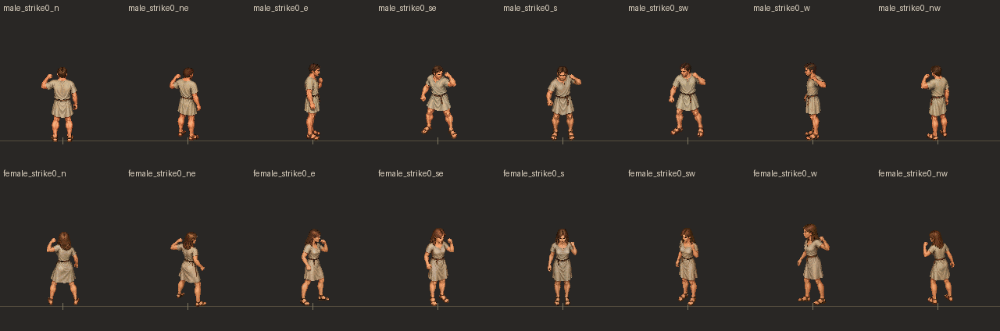

WALK: male N NE E SE S SW W NW; female same. Final imported candidates: repaired NE/NW and SE/SW included. Side-view support readability and body/hair drift remain under review.

ATTACK: windup/contact/idle recovery. Installed in the game; awaiting your art review.
